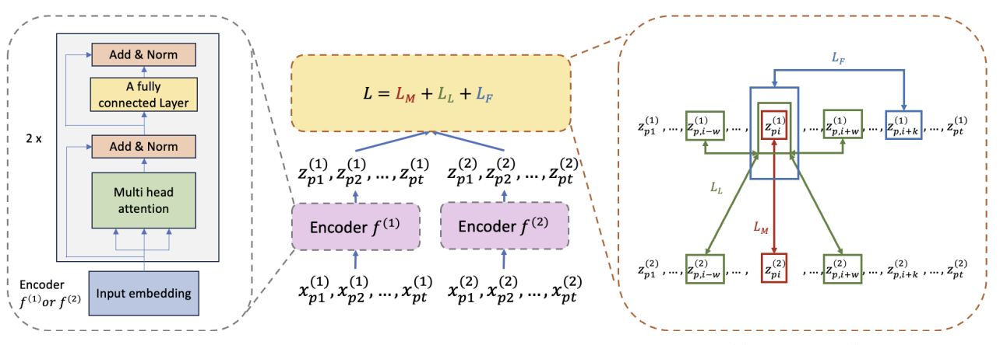
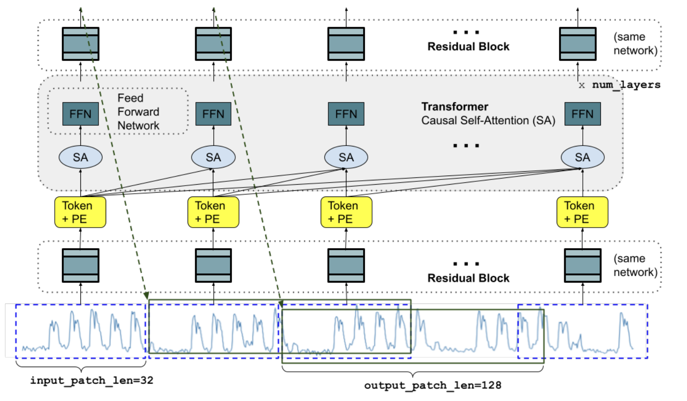
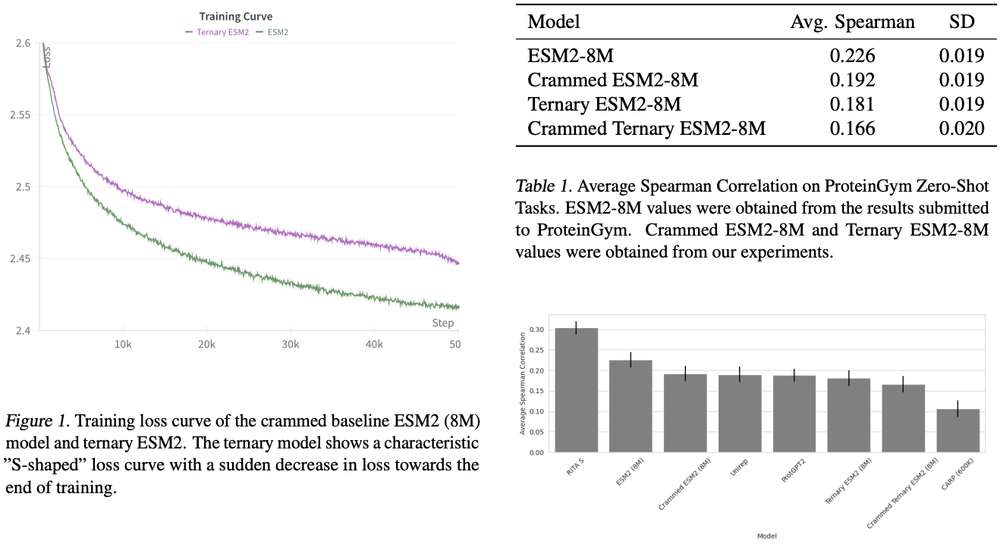

Impresiones generales
Esta vez escribo desde Viena, Austria, ciudad que visité con motivo de la Conferencia Internacional sobre Aprendizaje Automático (ICML). Organicé mi agenda mucho mejor que la última vez, y obtuve mucha información sobre los nuevos avances en varias áreas que me interesan, como la representación de series temporales, la informática médica y la biología computacional de proteínas. Abajo mi humilde selección de artículos favoritos. Espero que encuentres algo interesante.
Aprendizaje por contraste para la predicción de resultados clínicos con fuentes de datos parciales
Empezamos con una contribución significativa al campo de la informática médica. A medida que las historias clínicas electrónicas(EHR, por sus siglas en inglés) se hacen más y más comunes en todo el mundo, vemos que los nuevos métodos para procesarlas, representarlas y predecir a partir de ellas cobran cada vez más importancia. En este caso, los autores presentan CLOPPS (Contrastive Learning for clinical Outcome Prediction with Partial data Sources), cuyo objetivo es capturar información de distintas fuentes de datos de los mismos pacientes y alinearlas durante el entrenamiento mediante aprendizaje por contraste. Es importante destacar que lo hacen de manera que no todas las modalidades son necesarias en el momento de la inferencia, lo que constituye una limitación común en muchos modelos en este campo.

La figura de arriba representa el flujo de trabajo de preentrenamiento que los autores usan en CLOPPS: dadas dos observaciones longitudinales, el descodificador de la izquierda produce representaciones para cada modalidad, que luego se alinean contrastivamente en el espacio latente. La función de coste total es la suma de dos términos InfoNCE, que siguen estrategias separadas de muestreo de pares positivos/negativos, y un término de predicción a futuro (forecasting). El primero, \(L_M\), busca imponer coincidencia temporal entre modalidades. Acá, la asunción es que las distintas fuentes representan de forma colectiva y complementaria el estado de salud en ese momento, por lo que muestras tomadas al mismo tiempo en diversas fuentes son las únicas consideradas como pares positivos. En segundo lugar, el modelo incorpora un término de similitud local bastante original (\(L_L\)), basado en un estimador de Kaplan-Meier (KM) para el fenómeno que se esté intentando predecir. La idea es simple: si el paciente está sano, las series temporales no cambian tanto en un periodo de tiempo corto, y la amplitud del vecindario local del que muestrear pares positivos puede ser mayor. Si el paciente está enfermo, la curva de KM es más pronunciada y el vecindario del que tomar muestras de pares positivos es más chico. Mientras que \(L_M\) se encarga de alinear estrictamente las fuentes de datos a lo largo del tiempo, \(L_L\) se centra en las regiones de cambio rápido, que se corresponden con peores resultados según lo predicho por el estimador KM. Como idea me suena bárbara, y los estudios de ablación incluidos en el artículo muestran que es relevante. Por último, el tercer término, \(L_F\), es una pérdida de forecasting entrenada por modalidad de forma independiente.
Para una revisión de la función de coste InfoNCE estándar, ¡pasate por este post!
En cuanto a los experimentos, los autores muestran rendimiento SOTA en una serie de escenarios, motivados por un problema del mundo real en el que los datos proceden tanto de un proveedor de diálisis como de un sistema de datos nacional estadounidense -el United States Renal Data System (USRDS)-. En este caso, como los datos del flujo nacional no siempre están disponibles, es crucial desarrollar un modelo que pueda hacer predicciones cuando falten algunos datos.
TimesFM: un modelo fundacional decoder-only para forecasting de series temporales
Este es un artículo que, como muchos otros procedentes de Google, estuvo por todo Internet cuando salió. Tenía muchas ganas de ver el póster, y me alegro de haber podido pasarme y charlar con los autores. Como indica el título, TimesFM es un modelo basado únicamente en decodificadores para el forecasting de series temporales univariadas, entrenado tanto en tendencias de Google como en estadísticas de acceso a wikimedia.
Los datos están tokenizados a lo largo del tiempo, y la arquitectura se corresponde con un transformer sólo decodificador estándar, en el que los ’tokens’ pasan a través de un bloque residual en lugar de obtenerse de una tabla de búsqueda (como en los modelos de lenguaje tradicionales, por ejemplo), ya que los datos son continuos. El modelo se entrena para minimizar la el error cuadrático medio (MSE, por sus siglas en inglés) entre cada token y otro, obtenido en un horizonte \(h\) en el futuro.

La figura anterior ilustra la arquitectura del modelo TimesFM durante el entrenamiento, en el que una serie temporal de una longitud específica se descompone en una serie de parches. Como ya se mencionó, cada parche es procesado por un bloque residual que lo mapea a la dimensión necesaria para pasar por las capas del transformer. El modelo usa codificaciones posicionales sinusoidales (bien tradicionales, similares a las que se usan en el paper original presentando el transformer como arquitectura). La longitud de los parches y el horizonte \(h\) varían durante el entrenamiento, para evitar que el modelo se ajuste en exceso a una única configuración rígida.
El paper incluye una serie de experimentos que exploran diferentes configuraciones y esquemas de parcheo en diferentes benchmarks, alcanzando en muchos de ellos rendimiento SOTA en tareas de zero-shot. Aunque se trata sin duda de un artículo a tener en cuenta, una de sus principales limitaciones es que se centra únicamente en series temporales univariandas. A pesar de que el entrenamiento de modelos de representación en series temporales multivariadas es un problema mucho más difícil, hay varios trabajos recientes que ya estudian esta cuestión. Por ejemplo, iTransformer invierte la estrategia de codificación al tokenizar cada variable de forma independiente en toda la dimensión temporal, con un mecanismo de atención que se centra en las interacciones entre variables. Otro esfuerzo interesante, que alcanza rendimiento SOTA en muchas pruebas comparativas y aprovecha datos de múltiples fuentes, es UniTS. Este modelo tiene mecanismos de atención separados que funcionan tanto a entre variables como a través del tiempo, e incluye diferentes conjuntos de tokens para especificar una de varias tareas, incluyendo forecasting, imputación y detección de anomalías.
2Bits de proteína: modelos de lenguaje proteicos eficientes a escala de 2 bits
Por último, cambiamos un poco de tema y pasamos a los modelos de lenguaje de proteínas. 2Bits of protein es un artículo que se presentó durante los talleres del último día de la conferencia, que se basa en la idea reciente de entrenar modelos de lenguaje con parámetros ternarios, que pueden establecerse en cero, uno o menos uno. Se trata de un tema realmente relevante en el momento de escribir, habiéndose demostrado ampliamente que este tipo de modelos conservan la mayor parte de la precisión de sus homólogos de precisión completa, al tiempo que son mucho más eficientes en términos de memoria y costo computacional. Esto tiene implicaciones enormes para pequeñas y medianas empresas, así como para laboratorios de investigación que no tienen acceso a los mismos recursos computacionales que las grandes empresas del sector. Además, la capacidad de entrenar y ejecutar modelos localmente promete ventajas en términos de privacidad y seguridad de los datos, lo que es importante en cualquier aplicación relacionada con la salud (entre muchas otras, desde ya).
En este trabajo, los autores investigan el entrenamiento de un pLM sólo codificador utilizando una arquitectura ternaria, y lo comparan con ESM2 (con precisión estándar) en varias tareas de ProteinGym. Aunque el modelo ternario no es tan bueno como el de precisión estándar, sigue siendo competitivo en muchas tareas y es mucho más eficiente. Los autores también afirman que, basándose en el trabajo fundacional en este campo que menciono más arriba, cabe esperar que las variantes ternarias superen a ESM-2 una vez que se aumente el tamaño del modelo. ¡Esto está por verse!
Acá un fragmento de los resultados (con leyendas autoexplicativas):

En definitiva, creo que el impacto de estos enfoques puede ser enorme tanto para los pequeños como para los grandes actores. Por un lado, permite a gente sin hardware SOTA entrenar y utilizar mejores modelos, pero también permite a las grandes empresas entrenar modelos mucho más grandes de lo que podrían hacerlo de otro modo. Veremos si estas prácticas se generalizan en los próximos años.